Enterprise B2B ⋆ Low-code platform ⋆ 2020–2024
ProcessMIX
Product design of a low-code platform: the IDE and its nodes, builders, the Home section and a design system.
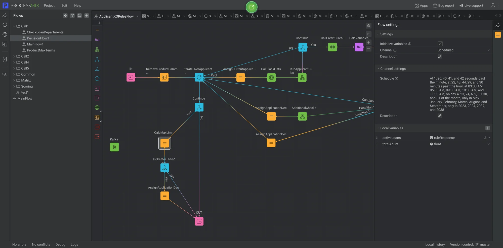
What ProcessMIX is.
Low-code PaaS ProcessMIX with the power of native development for building back-end of any complexity faster and leaner. Platform allows users to quickly develop, validate and deploy decision-making solutions through an intuitive, visual, drag-and-drop interface. Combine best practices in decision management with ProcessMIX capabilities to automate decision making in banking, financial, insurance, telco and other industries.
- developing business rules management systems (BRMS)
- database management (to manage any type of fields, attributes, build database tables through a visual constructor)
- RPA, process robotization
Tech mission
- All processes in one place
- Acceleration of the production cycle on every phase
- Single platform for all roles
- Cloud services provider
Functionality
- The ProcessMIX Flow builder provides visual metaphors for most programming commands. Rich functions support for Math, Arrays, Maps, Strings, Dates.
- The ProcessMIX Connectors Factory supports REST API, SOAP, Graph API, DB connectors, Kafka, S3 connector, Blockchain EVM connector, (your next connector).
- Developers have own dedicated local versions with possibility to test and debug.
- ProcessMIX Provision Center allows to add database, file storage and persisted Kafka queues for each environment
- The ProcessMIX environments control allows to tune configuration without code change, scale up and down, run several versions of the same app in parallel
Goal, task and my role.
Goal
The primary goal of this project is to help developers to building back-end logic of any complexity faster and leaner with the power of native development. That that why for me, as a product designer was the main goal to make the information architecture and the user experience clean, understandable and friendly, and modern.
Task
I joined the ProcessMIX development team during its early stages when there were only a IDE part with few functions in place. My role as a Product Designer is crucial in shaping the user experience and visual aesthetics of the platform. The current focus is on redesigning existing components and creating designs for new features, including an Administrative portal, development tools, nodes and builders.
Problem
- The problem was that there was no Administrative part (Home in the future), and the existing design was outdated, inconvenient, not user friendly, and many functions were not provided in it.
- It was only the IDE part (node constructor), consisting of a toolbar of nodes, a panel of their settings and parameters, and builders for them. There was also debug functionality.
- There were no any design layouts, so we had to develop everything from scratch, to build to create style guides, component libraries, and interaction patterns.
What I took on
to understand ProcessMIX current state, identifying strengths, weaknesses, and areas for improvement.
to gather insights into user needs, pain points, and expectations. This includes interviews, surveys, and usability testing.
for the existing functions, ensuring a modern and cohesive design language. Prioritize improvements based on user feedback & usability.
to create style guides, component libraries, and interaction patterns for consistent design as new features roll out.
to collaborate with team and stakeholders to develop new features, including new nodes, builders, environments and etc.
to develop detailed wireframes and interactive prototypes for the new features. Focus on user workflows usability.
for seeking feedback from, team and potential users. Iterate designs based on feedback to refine and enhance the user experience.
to make sure designs work well, considering technical limits & finding the best design solutions.
for redesigned components and new features for making informed design decisions and validate the effectiveness of design changes.
with the development team, analytics, stakeholders and users to maintain alignment with project goals and user expectations.
to develop marketing materials (banners, presentations, etc.) for advertising and promoting the platform and raise investments
to strategize the design process with clear timelines, providing regular progress updates, updating and managing tasks accordingly.
Information Architecture (after 5.05 release).
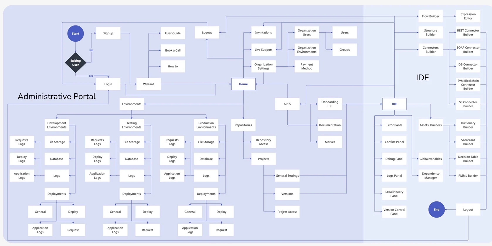
Source data for my work.
Since we did not have a clearly defined technical assignment and our service developed along with the business, the business analyst and I needed to decide how we would carry out the work: where to start first, how to track progress and evaluate the result. Therefore, we have developed a roadmap for our further actions.
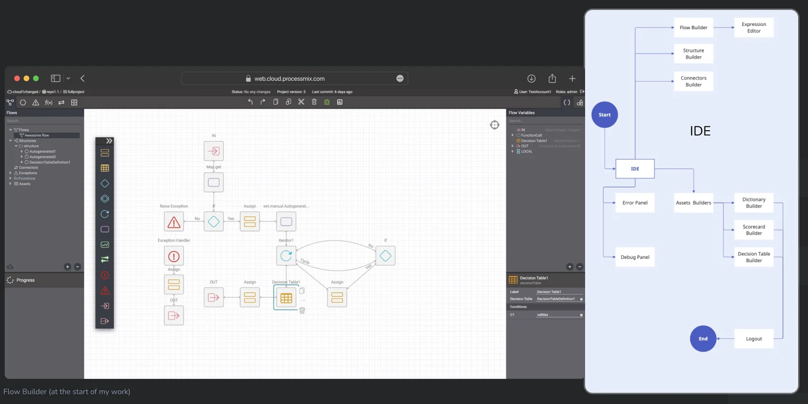
Redesign roadmap.
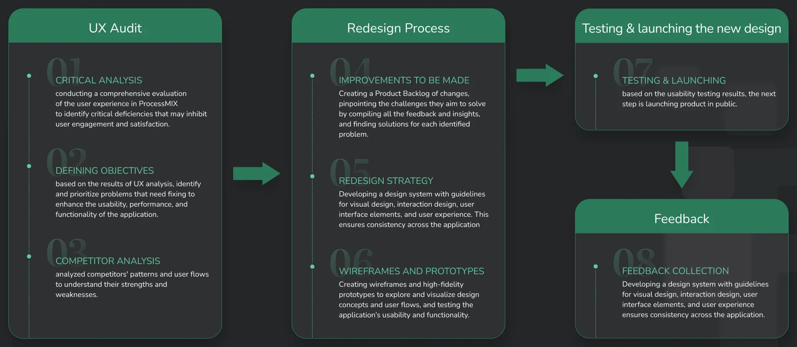
Critical analysis
conducting a comprehensive evaluation of the user experience in ProcessMIX to identify critical deficiencies that may inhibit user engagement and satisfaction.
defining objectives
based on the results of UX analysis, identify and prioritize problems that need fixing to enhance the usability, performance, and functionality of the application.
Competitor Analysis
analyzed competitors' patterns and user flows to understand their strengths and weaknesses.
improvements to be made
Creating a Product Backlog of changes, pinpointing the challenges they aim to solve by compiling all the feedback and insights, and finding solutions for each identified problem.
redesign strategy
Developing a design system with guidelines for visual design, interaction design, user interface elements, and user experience. This ensures consistency across the application
wireframes and prototypes
Creating wireframes and high-fidelity prototypes to explore and visualize design concepts and user flows, and testing the application’s usability and functionality.
Testing & launching the new design
testing & launching
based on the usability testing results, the next step is launching product in public.
Feedback
UX audit.
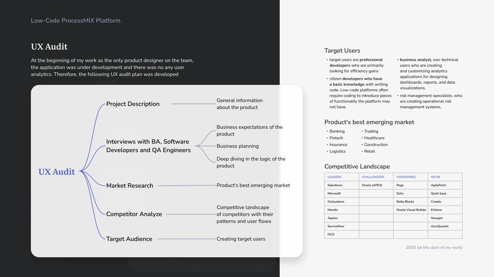
At the beginning of my work as the only product designer on the team, the application was under development and there was no any user analytics. Therefore, the following UX audit plan was developed
- target users are professional developers who are primarily looking for efficiency gains
- citizen developers who have a basic knowledge with writing code. Low-code platforms often require coding to introduce pieces of functionality the platform may not have.
- business analyst, non-technical users who are creating and customizing analytics applications for designing dashboards, reports, and data visualizations.
- risk management specialists, who are creating operational risk management systems.
- UX Audit
- Creating target users
- Competitive landscape of competitors with their patterns and user flows
- Deep diving in the logic of the product
- Competitor Analyze
- General information about the product
- Project Description
- Business planning
- Business expectations of the product
- Interviews with BA, Software Developers and QA Engineers
- Product's best emerging market
Improvements after the audit.
Redesign strategy By analyzing all the data received after the research, and identifying the problem areas, we came to the conclusion that it is necessary to create Wireframes and the Design system of the existing screens to correct deficiencies and make the foundation for the new functionality.
UX
- Non-intuitive interface
- There was more complex application logic, so the user was forced to take more steps
- There was no onboarding process
- There was no direct access to entities
- The Builders popups contained a large number of parameters and inputs, leaving users with insufficient space to enter information. Additionally, these popups included transitions to second-level popups. Therefore, we decided to convert them into application windows.
- The buttons were not in a user-friendly location.
UI
- The previous design looked outdated.
- The colors did not harmonize with each other
- The icons in the application had different styles
- Nodes on the background of the working field were not easily readable
- Some buttons were not easily recognizable, making them challenging to find and understand
- Some elements had shadows, while others did not
- The explorer item selections looked the same as the input
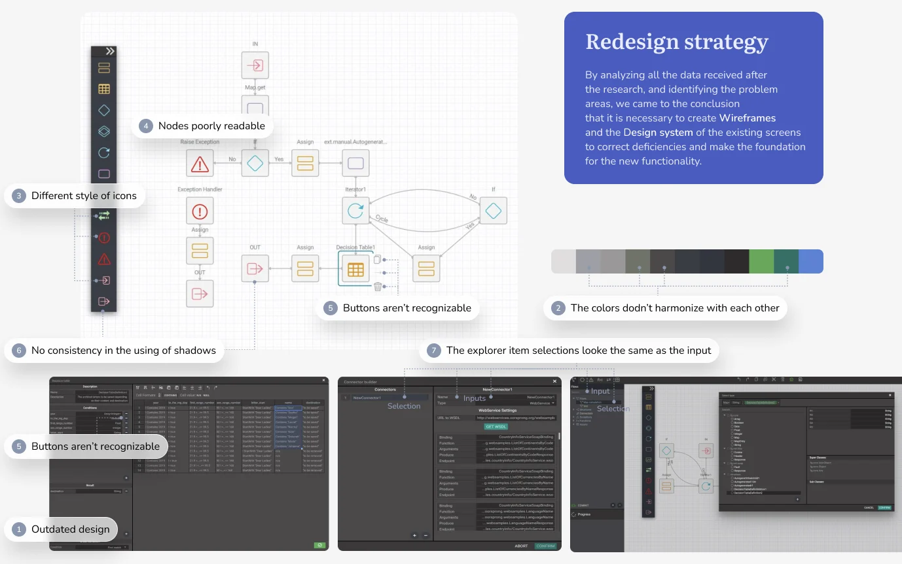
Wireframing.
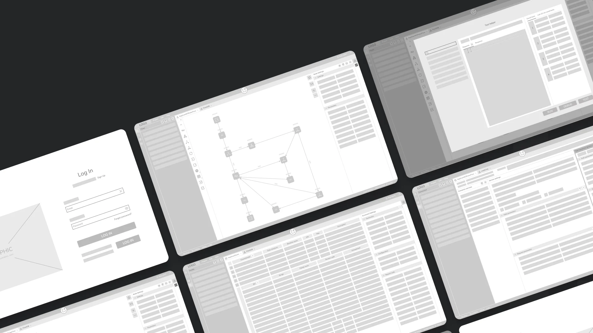
Using the research we had gathered, along with our information architecture and user flows, we iterated on different solutions using wireframes to further visualize and test the concepts we had.
Design Guideline: atoms.
Therefore, we employed the methodology composed of Atomic design to create interface design systems in a more deliberate and hierarchical manner. It consists of five parts: atoms, molecules, organisms, templates (wireframes), and pages.
The ProcessMIX Design Guideline comprises 30 pages, encompassing all the essential elements that assist developers and other stakeholders in achieving visual consistency across every element within the interface. This unification aims to harmonize all components in the identity of the ProcessMIX platform.
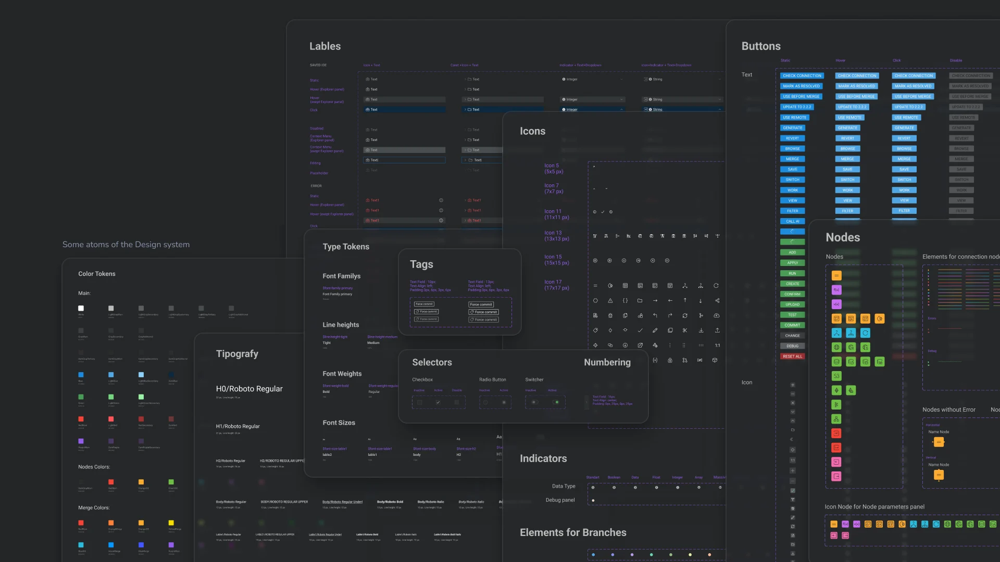
Molecules and organisms.
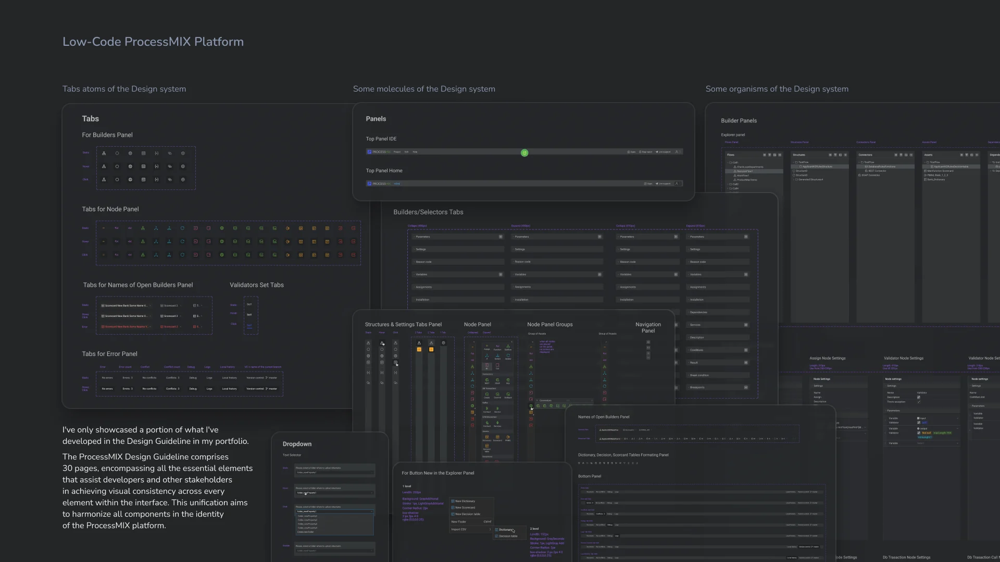
I've only showcased a portion of what I've developed in the Design Guideline in my portfolio.
Flow Builder.
With the ProcessMIX platform, developers can rapidly construct solutions and address backend tasks of any complexity using an intuitive visual editor – the Integrated Development Environment (IDE). Throughout the product development process, the IDE underwent fundamental changes.
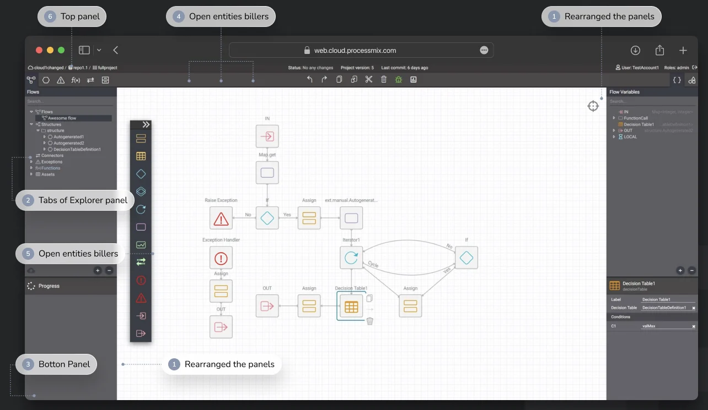
UX improvements
- We thoroughly reorganized the existing panels in the IDE and introduced new ones. This resulted in an expanded space for entity names and properties in the Explorer panel, Flow, and Nodes Settings Panels.
- We redesigned the Entities panel, introducing Global Variables and Dependencies Tabs. This adjustment helped conserve the height of the builder, which is crucial when working on intricate flow logic.
- A Bottom panel was introduced, housing: Errors and Conflicts Tabs (with an indication of the number of errors/conflicts), Debug, Logs, Local History, and Version Control Tabs. This enables users to swiftly access these panels with a single click, eliminating the need to close the builder window.
- We implemented the capability to collapse entity builders into folders, simplifying user access to the builders of the entities they are actively working on.
- During development, new nodes were added, prompting a reorganization of the Nodes Panel. Similar entities were grouped, and the expand panel mode was improved with added entity names for convenience.
- We enhanced the Top Panel by streamlining elements, removing unnecessary ones, and introducing the Deployment button – a critical feature in the IDE, ensuring maximum focus on it.
UI improvements
- Based on the design material approach, we developed a modern design, choosing to begin with a dark theme due to market and trend research indicating its advantage.
- The ADE field was darkened to shift the focus away from it, ensuring better readability of the waters by the user, preventing them from blending with the background.
- A color palette was developed, encompassing both the whitewash and stem settings, as well as the colors of the merge branches.
- Old icons were replaced with icons of the same style.
- A full redesign of nodes and connecting arrows was executed, rendering icons solid, memorable, and color-coded for similarity in purpose.
- Standardization of all inputs, labels, search fields, dropdowns, and more.
Structure Builder.
Data structures are fundamental constructs used to organize, manage, and store data efficiently. They define how data is arranged, accessed, and manipulated.
The Structure builder is a built-in editor for creating structures. Using the constructor, user can create structures using basic data types such as String, Integer, Float, Date, Boolean, Arrays, Maps, and other already created structures, not limiting the possibilities of use. Structures can be of any nesting.
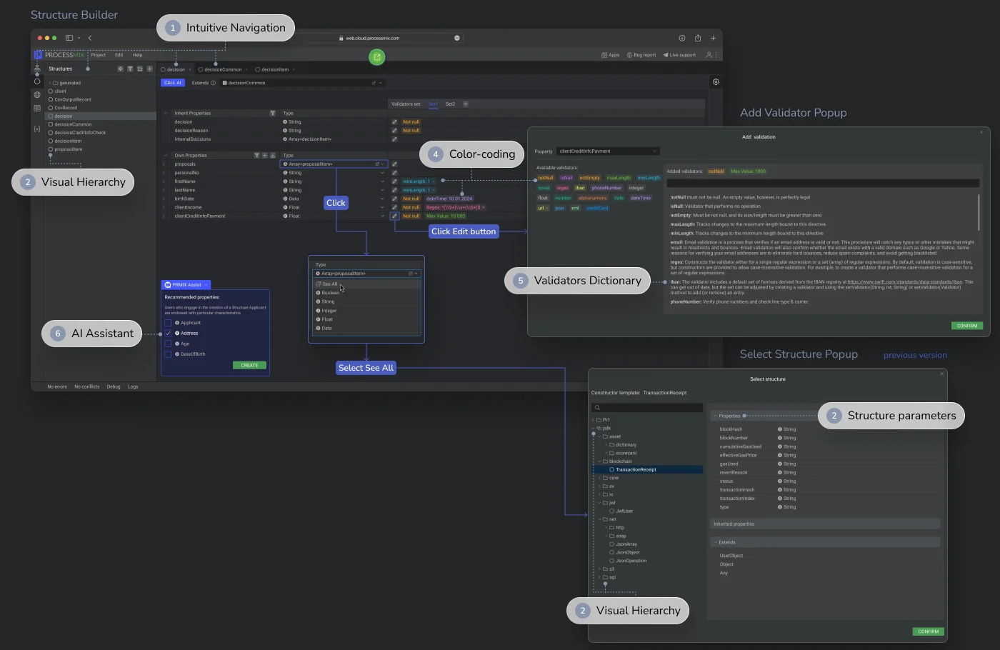
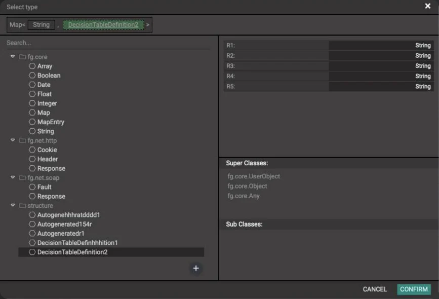
Previous versionImprovements
- The panels (Entity panel, Top & Bottom panel, Open Builders panel, Explorer & Settings Builder panels) have been redesigned just like Flow Builder for more intuitive and user-friendly navigation.
- Improved the visual hierarchy to make it easier for users to identify and understand the structure of elements.
- Optimized the Selector PopUp to streamline the selection process, ensuring users can easily choose elements by exploring the structure parameters with clarity.
- Was implemented color-coded validators in the Structure Builder for a more user-friendly and efficient validation process. Each validator type is now visually distinguished by a specific color, providing users with quick and intuitive feedback, reducing errors, and enhancing the overall user experience in the ProcessMIX platform.
- Implemented tooltips, validator dictionaries, features to assist users in quickly finding and selecting the right elements.
- Was integrated an AI Assistant into the Structure Builder to enhance user experience and streamline the development process. The AI Assistant assists users by offering efficient parameters of the structures. This addition aims to boost productivity, reduce development time, and empower users with valuable insights, ultimately creating a more intuitive and user-friendly experience.
- Responsive Design of the Structure Builder table. The user can change the widths of the table columns to a comfortable working width.
- Simplified the interface to reduce cognitive load, making it more accessible for users with varying levels of expertise.
Assets Builders.
The Assets Builders group includes:
- Scorecards Builder – a tool designed to calculate a final score based on the input parameters of certain characteristics for further decision-making.
- Dictionary Builder – a tool designed for the tabular viewing of various data.
- Decision table Builder – a tool designed to work with complex logic and handle a large number of rules in a tabular format.
- PMML Builder – a tool designed to execute existing models based on the PMML is an XML-based language, which provides a way for applications to define statistical and data mining models.
As a UX/UI designer, my primary focus was enhancing the user experience for these builders through a thoughtful redesign, with a particular emphasis on big data tables. When I started working on ProcessMIX, the PMML Builder wasn’t implemented. Consequently, research was conducted to devise an optimal and user-friendly design for this particular builder.
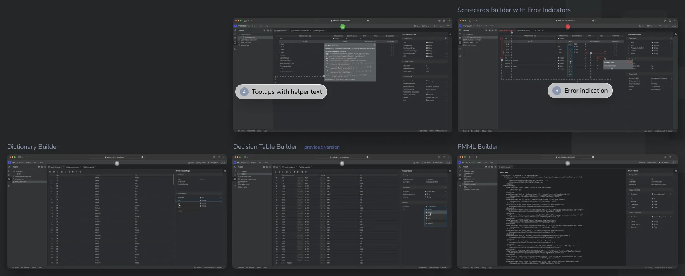
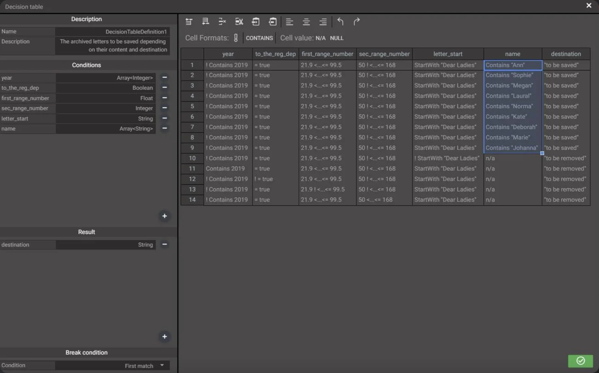
Previous versionWas implemented
- In the initial design, these builders were popups, limiting table space. Therefore, they were transformed into pages.
- I implemented an adaptive design, where resizable columns and customizable views reflect my user-centric approach.
- Visual enhancements like dynamic row highlighting for improved data readability.
- Was integrated tooltips to provide contextual information, assisting users in resolving errors and identifying appropriate expressions for parameters
- In the event of a data entry error in a cell, not only was the cell highlighted in red, but also an icon with a tooltip appeared. Additionally, the entire row containing this cell and the tab with the name of the builder where this cell is located were highlighted.
Connectors Builders.
Connectors enable users to seamlessly integrate their resources with a variety of additional services and data sources. The Connectors Builders group includes
- The REST Connector Builder provides the ability to create a codeless connection to any external systems; services via API for further use in flows.
- The SOAP Connector enables applications to interact with SOAP-based web services described using WSDL. Connector builder has built-in functionality that allows the user to test a imported WSDL. Also it's possible to test the service to see if it works and see the result.
- The DB Connector Builder is a component that enables users to connect to external or internal databases. The internal database is accessible as an additional resource that can be added to the organization page.
- The S3 Connector Builder is a component that allows interaction with Simple Storage Service (S3) Amazon Web Services.
As a product designer, I revamped the Connector interface from a popup to a dedicated page, enhancing user interaction and simplifying integration. I introduced new features, including various connectors, offering users seamless connectivity options. Usability testing played a key role, ensuring smooth integration of databases for an intuitive user experience. In summary, my work encompassed visual redesign, strategic feature introduction, and meticulous testing for a user-friendly Connector experience.
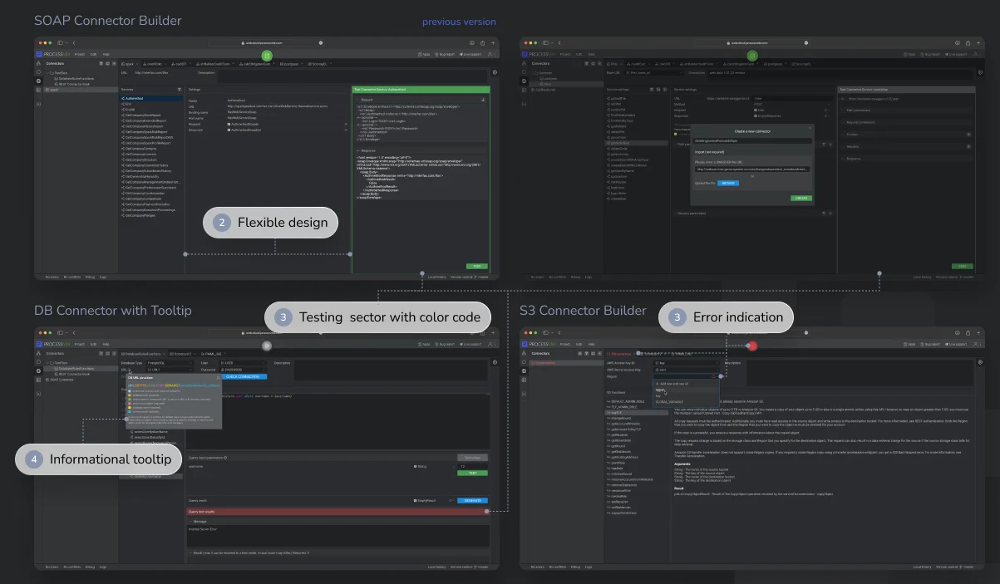
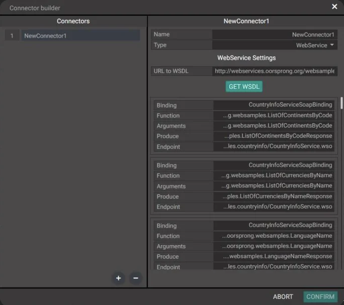
Previous versionWas implemented
- The first step was to develop distinct categories for each type of service, allowing users to effortlessly integrate a specific connector into the flow.
- Was engineered a flexible design, empowering users to personalize column widths for improved convenience while managing extensive lists of parameters.
- Was prioritized testing and introduced color-coded indicators for testing stages: pre-testing, successful testing, and errors found during testing.
- Informational tooltips were created to facilitate a smoother onboarding experience for users, guiding them through the logic of the connectors.
- In case of a data entry error, I ensured the error was highlighted with an icon and a tooltip for assistance. The builder's name tab was emphasized, and the Deploy button signalled execution restrictions until the error was rectified.
Error Panel, Conflict Resolver Panel and Debug Panel.
The Error Panel displays all errors that occur while working on the project. With its help, you can easily navigate to the entity that contains the error to correct it.
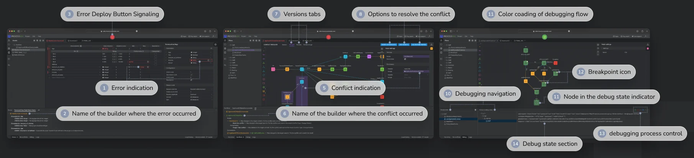
Improvements
- Enhanced the visual representation (Red-coding + Warning icon) of errors for quick identification.
- Emphasized the name of the builder where the error occurred, aiding users in locating and addressing issues.
- Integrated clear indications on the Deploy button to signal restrictions until errors are rectified.
- Responsive Design of the Error panel. This panel adapts seamlessly to different screen sizes and devices.
- These improvements collectively aim to enhance the overall usability, clarity, and efficiency of the Error panel within the ProcessMIX platform.
Conflict Resolver
Conflict Resolver helps to resolve merge conflicts, and provides a user with the ability to determine what changes should be applied to the project.
- Enhanced the visual representation (Purple-coding) of conflicts for quick identification.
- Emphasized the name of the builder where the conflict occurred, aiding users in locating and addressing issues.
- For user-friendly navigation in the versions of the entity builder was created Versions tabs with conflicting project versions (Merged, Remote, Before merge tabs) on the top panel. The user can switch between versions and view the contents of each. All conflicts are highlighted in the merged tab. The user can also make changes to it.
- To resolve the conflict was created The MARK AS RESOLVED button, the USE REMOTE button, the USE BEFORE MERGE button.
- Responsive Design of the Conflict Resolver panel. This panel adapts seamlessly to different screen sizes and devices.
Debug Panel
a full-fledged debugger — an effective tool for the timely identification of problems in the process logic.
- Created User-Centric navigation within the debugger, ensuring users can easily move between breakpoints of the debugging flow.
- Enhanced the visual representation (Green-coding) of flow in the process of debugging for quick identification. The Green border of the Node in the debug state indicator was created too.
- Implemented the visual representation of breakpoints, to help user to see them and navigate between them in the ADE field.
- Facilitated efficient exploration of the value of all variables during debugging in the debug state section. All values can be edited, while debugging that adds flexibility to the process.
- A debugging process control panel with intuitive buttons Run, Stop, Step into, Step in, Step out was developed.
- Responsive Design of the Debugger panel. This panel adapts seamlessly to different screen sizes and devices.
Logs, Local History and Version Control.
The Logs panel includes Deploy and Application Logs parts. They displays events, errors, and the state of the application or deployments compiled in the system. Local History helps user to constantly track all uncommitted changes made to a project independently of version control. All changes in the project are displayed on the timeline. Version Control is the component that tracks and manages changes to a project. This tool makes work on a project more efficient and helps to achieve set goals in a shorter time frame.
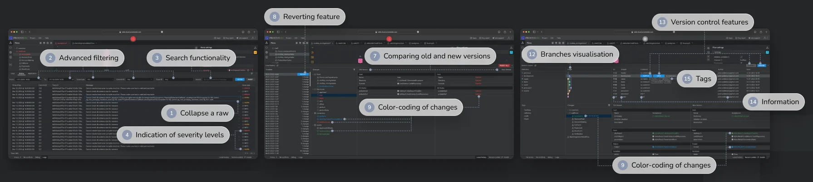
Improvements
- Improved the visual hierarchy of log entries for better readability and quick identification of important information. Expand function of raws was added to make possible for user to sea all larges descriptions text in a one click
- Implemented advanced filtering options to allow users to easily sort and filter logs based on various parameters such as time, issue type, commit ID, trace ID and itc.
- Enhanced the search functionality within the Logs panel, enabling users to quickly locate specific logs using keywords or phrases.
- Introduced color coding and icon indications of severity levels to visually highlight the importance of each log entry, making it easier for users to prioritise actions.
- Enabled real-time updates in the Logs panel to ensure users receive the latest log entries as they occur, supporting proactive issue resolution.
- Was created extended Version control table to display detailed information about each revision, including timestamps, names entities, and detalization of their parameters and values where changes was made.
- Enabled users to compare old and new versions of a project side by side, facilitating a comprehensive understanding of the evolution of the project over time.
- Introduced a reverting feature, allowing users to quickly revert to selected version.
- Enhanced the color-coding of entities name, parameters and values where changes was made for quick for a quick and clear search of changes that have been made.
- Responsive Design of the Conflict Resolver panel. This panel adapts seamlessly to different screen sizes and devices.
- Created Streamlined the user interface of the Version Control panel to provide a unified and intuitive experience for users interacting with versioning features.
- Introduced a visual representation of branches, offering users a clear overview of the branching structure and facilitating easier navigation.
- Provided tools for users to switch, view, commit and merge branches directly from the Version Control panel, simplifying branch management tasks and promoting collaboration.
- Improved commit display, providing detailed info on date, authors, branch, ID, and comments for a deeper understanding of project changes.
- Implemented the ability to add tags in the comments to help user in branches navigation.
- Responsive Design.
Administrative Portal (HOME section).
The administrative application offers the capability to manage organizations and their resources, organize teams, grant access to projects, manage environments, and distribute project versions across them.
UX improvements
- Organized content and features logically to facilitate easy navigation and project/repository management, aiding in tracking and controlling their development history.
- Broke down the portal into modular components for flexibility and scalability, enabling easier updates and modifications.
- Implemented platform onboarding, crucial for new users to familiarize them with the interface and features, reducing confusion and expediting the learning process. It sets clear expectations, builds trust, and encourages user engagement for a positive experience.
- Introduced user training, offering Flow templates, tutorials, and comprehensive documentation to help users effectively utilize the portal's features and functionalities.
- Incorporated live support, allowing customers to communicate with businesses online in real-time. Live chat facilitates resolving delivery issues, refund requests, or bug reports.
- Implemented feedback mechanisms to gather user input and continuously improve the portal based on insights and suggestions.
UI improvements
- Based on the design material approach, we developed a modern design, opting for a dark theme based on market and trend research indicating its advantages.
- Maintained consistency in layout, typography, colors, and branding elements to establish a cohesive and professional look.
- Created icons in the same style.
- Standardized all inputs, labels, search fields, dropdowns, and more.
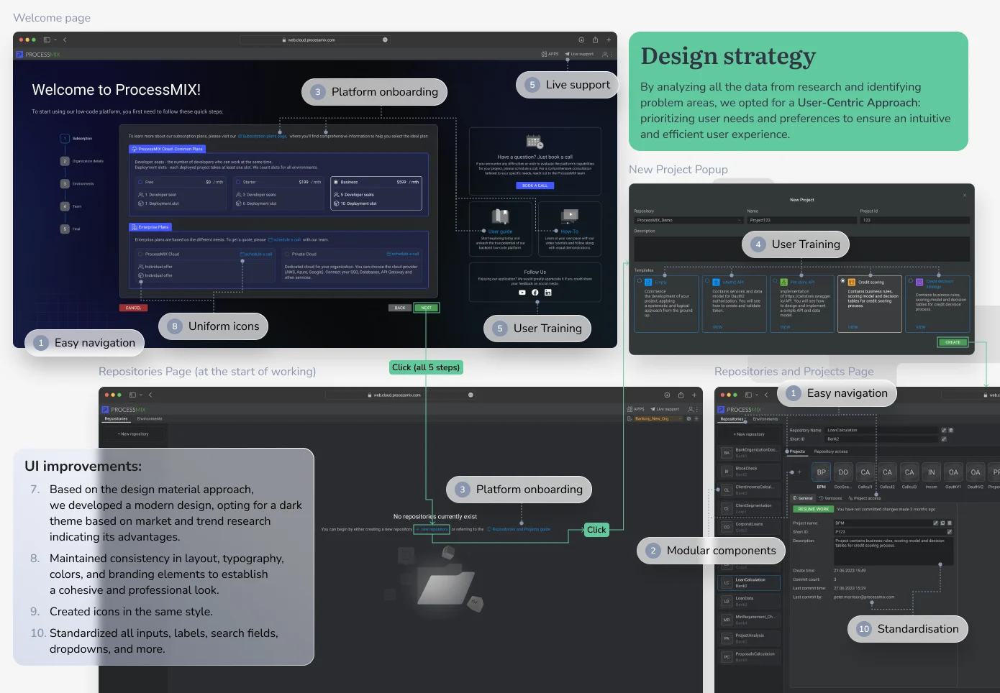
Design strategy
By analyzing all the data from research and identifying problem areas, we opted for a User-Centric Approach: prioritizing user needs and preferences to ensure an intuitive and efficient user experience.
Repositories and Projects.
Repositories is the Home section of the application, containing a list of existing repositories and projects. Users can create repositories and projects, select a project to work on, and switch to working on it. Users can manage projects and distribute them across organization repositories. Additionally, users can track project changes made by all team members.
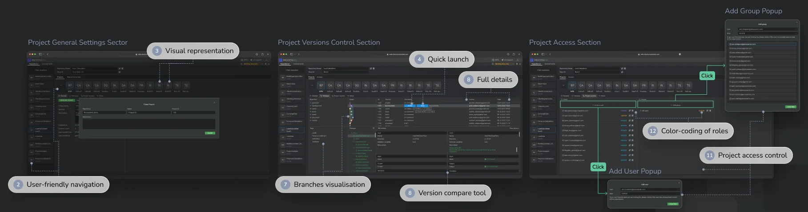
Improvements
- Created the user interface for the Repositories and Project section to enhance clarity and ease of use.
- Implemented navigation within the Repositories and Project section for smoother access to different projects and repositories.
- Implemented the visual presentation of project and repository information to enhance readability.
- Added the ability to start working on a specific version by selecting the desired version and clicking the WORK button. Users can view a specific version by selecting it and clicking the VIEW button; however, editing is disabled in this mode.
- Integrated version control and project management features to boost productivity and collaboration in creating, managing, and collaborating on projects within the platform.
- Streamlined the user interface of the Version Control panel to offer a unified and intuitive experience for interacting with versioning features.
- Introduced visual representation of branches and tags to provide users with a clear overview of the branching structure and facilitate easier navigation.
- Improved commit display to provide detailed information on dates, authors, branches, IDs, and comments for a deeper understanding of project changes.
- Introduced features for comparing different versions of projects and repositories.
- Implemented role-based access control (RBAC) for projects to effectively manage user permissions.
- Introduced user-friendly interfaces for managing project access and permissions.
- Implemented color-coding of roles within the project to help members quickly distinguish between different roles, enhancing communication and collaboration.
- Responsive Design.
Environments.
Environments — This is the HOME section of the application where users can access information about available environments based on their chosen subscription plan. Users can view and manage deployments and test them. The Deployment section contains a list of all deployed projects, including personal deployments created in the IDE and common deployments created via HOME. Users can view and manage deployments, deploy projects to any environment for future use of Swagger/WSDL files, and access keys. The Database section contains information on the internal database, including utilization, restrictions, and credentials. This information is used to create a DB connector in the IDE or to access the database from other services.
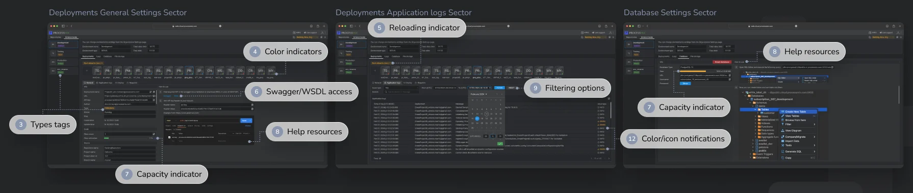
Improvements
- Improved the Environments section with a cleaner and more intuitive user interface.
- Introduced user-friendly interfaces for managing deployment and database settings and permissions.
- Implemented visual representations, such as tags of environment types and deployment types, for quick overview and easy identification.
- Created color indicators for deployment statuses (Starting — blue circle, Running – green circle, Stopped — grey circle, Failed — red circle) to provide users with quick visual representation of their deployment status, aiding in monitoring and management.
- Added search function for quick retrieval of required deployment logs.
- Customized the JavaScript DatePicker for convenient date entry or selection, with day, month, and year view options.
- Implemented automated notifications with color-coding and icon-coding to keep users informed about real-time log types.
- Responsive Design.
- Enhanced deployment auto-reload indicator for better visual representation of reloading schedule.
- Implemented access to Swagger and WSDL files in the General tab for quick access.
- Enhanced slot utilization and database size color indicators for clearer visual representation, aiding in resource management.
- Provided comprehensive documentation and help resources within the Environment sector to assist users in understanding functionalities and features.
- Introduced filtering options for efficient organization and retrieval of deployment logs.
Organization settings.
On the organization settings page, users can manage their subscription and team, configure environments, and purchase additional resources such as deployment slots, developer seats, databases, and more.
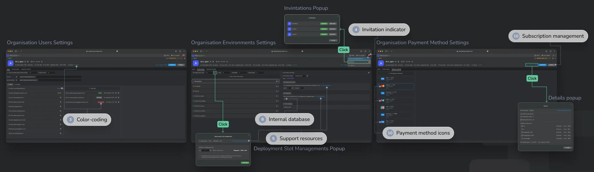
Improvements
- Introduced a user management dashboard that allows administrators to easily view and manage all users within the organization. This dashboard provides quick access to user roles, permissions, and other relevant data.
- Implemented user groups and segmentation features that help administrators create user groups based on roles or project affiliation, allowing for more targeted communication and access management.
- Implemented color-coding of subscription, role, and invitation user statuses. This helps users better monitor and manage the subscription plan, organization users, and group lists.
- Created an accent indicator to alert users of new invitations to other organizations, facilitating timely acceptance or rejection of invitations.
- Introduced a centralized dashboard for managing payment methods associated with the organization. Administrators can add, remove, and update payment methods, with icons added for quick orientation.
- Icons of payment systems have been added for quick orientation in payment methods.
- Created management capabilities allowing administrators to view, modify, and renew subscription plans for the organization, including upgrading/downgrading subscription tiers and adding/removing features.
- Responsive Design.
- Introduced a centralized dashboard for managing organization-wide environments, providing administrators with a comprehensive view of all associated environments, including development, testing, and production environments.
- Implemented environment access controls and permissions management, allowing administrators to define granular access policies for users and groups, ensuring only authorized individuals have access to specific environments and resources.
Sharing Projects.
Marketplace provides users with the ability to reuse logic within their projects and allow other organizations to utilize projects for their own logic building. Once published in the HOME app, the project can be used as a dependency in the IDE through the Dependency Manager. Upon installing a dependency, users can reuse entities from any available project, including flows, structures, connectors, assets, and global variables. The Dependency can be installed on any project in the IDE.
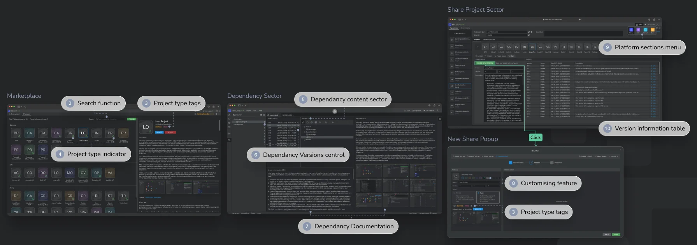
Improvements
- The user interface of the marketplace was created for usability and visual appeal. Clear layouts and intuitive navigation elements were implemented to improve the overall user experience.
- Added a search function to customize product tiles, facilitating quick navigation in product lists.
- Introduced visual representations like project type tags to provide users with a rapid overview and easy project identification based on their direction.
- Implemented project type indicators (published/user-developed) to visually distinguish projects in the market list, aiding users in navigation.
- Added a customising feature of the product tiles for quick navigation in the product list.
- Was implemented the ability to quickly switch to spaces such as the Home Section, IDE Part, Market and Project Documentation make it easier for the user to navigate and manage them.
- Created an extended version information table to present detailed version information such as timestamps, version scope, and descriptions, along with documentation outlining new features in each version.
- Responsive Design.
- Developed the ability to view entities included in the dependency version, enabling users to quickly understand changes in the dependency package.
- Implemented the option to upgrade from the current version (green indicator) to a newer one (Update button-icon) with a preview of the dependency package in a neighboring section, allowing users to select the appropriate version.
- Added documentation for dependencies to offer users more comprehensive and up-to-date information, including version history, release notes, and usage instructions, accessible directly within the platform.
Conclusion.
When I joined RNDPoint as the sole product designer, ProcessMIX was in the development stage, with no commercial applications.
Subsequently, after extensive research, development, and testing, ProcessMIX was successfully integrated into all internal projects of the company, replacing Java. This resulted in reduced labor costs for other applications, and developer feedback was highly positive.
This project provided valuable insights into the needs of both developers and business stakeholders in the realm of code platforms. It offered an excellent opportunity to derive conclusions from extensive survey and interview data.
We meticulously listened to and analyzed user experiences, refining our hypotheses and continually asking probing questions to uncover underlying issues. While the outcomes may not have always been definitive, it enabled us to hone our ability to think critically, select appropriate methodologies, and design experiments to yield insights.
I used Atomic design, customizing it for our platform's needs, resulting in a flexible system accommodating changes like color palette adjustments, input designs, and nodes. This made mid-development alterations smoother with less effort and greater flexibility.